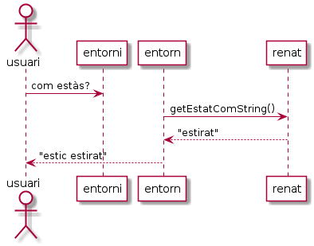
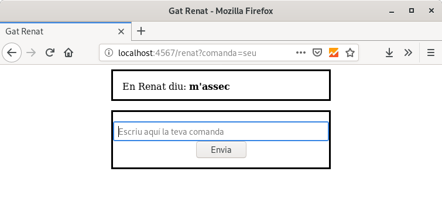

Renat en Web¶
A continuació, veiem com podem aprofitar els coneixements que hem obtingut sobre Spark per millorar la interacció amb els usuaris d’un dels exercicis que hem fet: Exercici 14. ☞ L’entorn operatiu del gat Renat
Recordem¶
Recordem l’esquema de comunicació entre usuaris i la classe GatRenat.

Fent servir un diagrama de classes UML, els membres de les classes (i enum) en joc són:
![@startuml
class EntornOperatiu {
EntornOperatiu()
EntornOperatiu(GatRenat)
String processaEntrada(String)
boolean demanaSortir(String)
}
class GatRenat {
GatRenat()
GatRenat(GatEstat)
int getVides()
void setVides(int)
String getEstatComString()
GatEstat getEstat()
void setEstat(String)
void setEstat(GatEstat)
boolean estaViu()
boolean estaEstirat()
boolean estaAssegut()
boolean estaDret()
String estirat()
String seu()
String aixecat()
}
enum GatEstat {
ESTIRAT, DRET, ASSEGUT
}
EntornOperatiu o-right- GatRenat
GatRenat *-right- GatEstat
hide empty members
hide circle
skinparam class {
BackgroundColor White
}
@enduml](_images/plantuml-bc96ea2af9c308a45667a08cfc11b248369321fb.png)
Un mètode que probablement tindrà el teu EntornOperatiu és el main(). Aquest
se n’encarregarà probablement d’inicialitzar aspectes com la instància de
l’EntornOperatiu, la classe BufferedReader o similar per llegir de
consola, i presentarà un bucle que reculli comandes de l’entrada estàndard
i les faci processar pel mètode processaEntrada().
Aquesta part del main la podríem extreure a una classe externa, com ara Main de manera que la classe EntornOperatiu no se n’hagi de preocupar de qüestions d’entrada/sortida.
El codi de la nova classe podria quedar similar a:
1 2 3 4 5 6 7 8 9 10 11 12 13 14 15 16 17 18 19 20 21 22 23 24 25 26 27 28 29 30 31 32 33 | /*
* Programa que ofereix una interfície de l'EntornOperatiu
* als usuaris per entrada/sortida estàndard
*/
import java.io.BufferedReader;
import java.io.InputStreamReader;
import java.io.IOException;
public class Main {
private static BufferedReader entrada = new BufferedReader(
new InputStreamReader(
System.in));
public static void main(String[] args) throws IOException {
EntornOperatiu entorn = new EntornOperatiu();
while (true) {
String comanda = obteComanda();
String resposta = entorn.processaEntrada(comanda);
System.out.println(resposta);
if (entorn.demanaSortir(comanda)) {
break;
}
}
}
private static String obteComanda() throws IOException {
System.out.print("[Renat]: ");
return entrada.readLine().toLowerCase();
}
}
|
No et resulta sospitosament similar a la funcionalitat que realitzava la classe Main de les aplicacions Web que hem estat fent amb Spark?
Recordem el codi de la classe Main que vam veure l’exemple de Spark.
15 16 17 18 19 20 21 22 23 24 25 26 27 28 29 30 31 32 33 34 35 | public class Main {
static String composaSalutacio(String nom) {
if (nom == null || nom.isEmpty()) {
nom = "món";
}
return nom;
}
public static void main(String[] args) {
staticFiles.location("/");
get("/holaspark",
(rq, rs) -> {
String nom = composaSalutacio(rq.queryParams("nom"));
Map<String, Object> params = new HashMap<>();
params.put("nom", nom);
return new ModelAndView(params, "holaspark.html");
}, new FreeMarkerEngine());
}
}
|
La diferència més important, i evident, és que la interacció amb els usuaris és mitjançant consola en comptes de un servei Web, però en el fons és el mateix objectiu: obté què volen els usuaris, ho fa processar i fa arribar als usuaris el resultat.
El while, però, queda «amagat» pel servidor Web.
Exercici 11. L’entorn Renat en Web¶
La resta d’aquesta secció definirà tot un exercici pas a pas.
Gaudeix-la!
Hola EntornOperatiu¶
Vinga, fem-ho!
En primer lloc, creem una nova carpeta pel nostre projecte Web. Al teu
repositori fes servir 09_11_entornrenat/ on afegiràs la següent
estructura de fitxers:
.
├── build.gradle
└── src
└── main
└── java
├── EntornOperatiu.java
├── GatEstat.java
├── GatRenat.java
└── Main.java
Farem servir el mateix build.gradle
que hem estat fent servir fins ara.
La primera versió de la classe Main que et proposo serà molt similar a
la primera que vam veure:
6 7 8 9 10 11 12 13 14 15 | import static spark.Spark.get;
public class Main {
public static void main(String[] args) {
EntornOperatiu entorn = new EntornOperatiu();
get("/renat", (rq, rs) -> entorn.processaEntrada("com estàs?"));
}
}
|
La resta dels fitxers, són una còpia dels que vas crear a Exercici 14. ☞ L’entorn operatiu del gat Renat
Si executes el servidor (recorda gradle run) i carregues la pàgina http://localhost:4567/renat
hauries de veure l’estat inicial del gat Renat.
Fàcil, no?
Proves¶
Tot i que fer unes proves completes queda fora de l’abast d’aquesta introducció a la programació Web, sí que disposem de proves unitàries que podem integrar amb el nostre nou projecte.
Ves a la carpeta test/ de l’exercici original i fes una còpia el fitxer
TestExercise.java dins del teu projecte.
.
├── build.gradle
└── src
├── main
│ └── java
│ ├── EntornOperatiu.java
│ ├── GatEstat.java
│ ├── GatRenat.java
│ └── Main.java
└── test
└── java
└── TestExercise.java
I simplement executa el conegut gradle test que t’hauria de dir que
tot ha anat bé.
En cas que vulguis assegurar-te que realment estiguin passant les proves,
pots, per exemple, modificar el fitxer build.gradle de manera que la
secció test es vegi de la següent manera:
test {
useJUnitPlatform()
dependsOn 'cleanTest'
testLogging {
events "passed", "skipped", "failed", "standardOut", "standardError"
}
}
En tornar a executar les proves, ara et sortirà una llista amb tots els tests que passa.
Interactuem amb l’entorn¶
El que hem aconseguit fa un bon paper com a «Hola Entorn» doncs tenim clar que estem comunicant-nos amb una instància de l’entorn operatiu del gat Renat i que el codi funciona tal i com funcionava per la versió en consola.
Però no ens volem quedar aquí, oi?
El següent pas serà oferir la possibilitat de que els usuaris llencin comandes a l’entorn.
Per exemple, voldrem que ens funcioni la següent seqüència de crides a
curl:
$ curl localhost:4567/renat
no t'entenc
$ curl localhost:4567/renat?comanda=com+estàs%3F
estic dret
$ curl localhost:4567/renat?comanda=seu
m'assec
$ curl localhost:4567/renat?comanda=com+estàs%3F
estic assegut
$ curl localhost:4567/renat?comanda=seu
no faig res
$ curl localhost:4567/renat?comanda=estira\'t
m'estiro
Haurem de escapar alguns caràcters com espais, apostrofs i interrogant, però l’entorn ens respondrà de la manera esperada.
Per descomptat, també ho podem fer des del navegador, però el mecanisme per línia de comandes resulta molt temptador doncs ens permetria programar uns jocs de prova força senzillets.
Aquest pas ens resultarà molt fàcil. Tant, que només ens caldrà modificar
lleugerament la classe Main.
Et deixo aquí la solució per si no te’n surts.
Renat amb formulari¶
D’acord que podem interactuar amb el nostre Renat, però… diguem que la usabilitat és com a mínim millorable.
I com que ho és, millorem-la!
En aquesta secció afegirem a la nostra aplicació un formulari que permeti recollir la comanda.
L’aspecte que et proposo serà quelcom similar a la següent captura:
Per descomptat, serà convenient fer servir una plantilla i, probablement, una mica de CSS, tot i que no cal que quedi igual que la captura.
El que veuràs és que quan envies comandes com «com estàs?» amb el formulari, els caràcters d’escapament ja es col·loquen per si sols, per millor goig dels nostres usuaris.
Un petit truc: per tal que cada cop que carreguem la pàgina, ens
col·loquem directament al quadre de text, podem fer servir l’atribut
<input autofocus="autofocus" …>.
Millorem la interacció encara més¶
El cas és que no deixa de resultar peculiar haver d’escriure la comanda en un quadre de text a una aplicació Web. No trobes?
Per sort, HTML ens ofereix multitud de maneres de millorar la situació. Et
proposo un parell amb <input> de tipus «radio» i amb botons.
Pista: en ambdós casos, pots codificar el valor de la comanda a l’atribut
<input valor="com estàs?" …>
Per aquesta part final de l’exercici et proposo que implementis al menys una d’elles o, en cas que t’hagi atacat a inspiració, alguna d’addicional. Fins i tot pots millorar l’aspecte de la pàgina de la manera que més t’agradi.
Algunes idees:
comandes amb desplegables
mostrar l’estat del gat amb un dibuix o foto diferent. Exemple, un gat assegut quan està assegut. La teva imaginació i les teves ganes manen aquí!